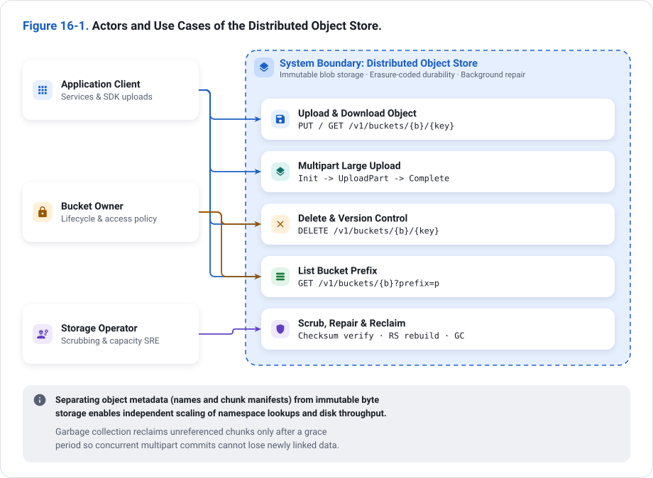
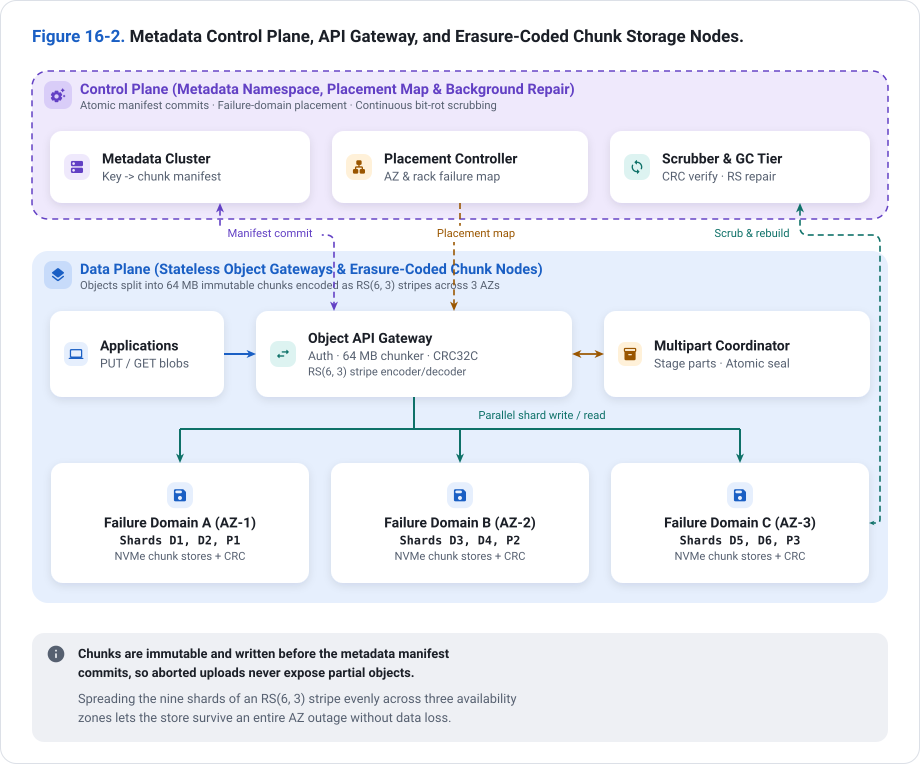
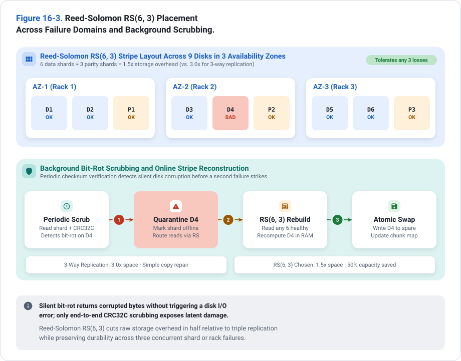

16. Object Store: System Design
A distributed object store persists immutable binary blobs ranging from kilobyte thumbnails to multi-terabyte archival datasets and serves them by flat key within a bucket over HTTP. At exabyte scale spanning tens of thousands of spinning disks and NVMe drives, hardware failure ceases to be an anomaly and becomes a continuous background process: with a 2% annual drive failure rate across 20,000 disks, roughly one drive fails every single day, while firmware defects and magnetic decay introduce unannounced silent bit corruption.
In this chapter, we design an S3-compatible distributed object store that converts fragile commodity hardware into eleven-nines durability (99.999999999% annual object survival). By restricting the data model to immutable whole-object replacement rather than POSIX random-access file mutation, we separate strongly consistent object metadata from erasure-coded chunk storage, eliminate in-place update divergence, and execute continuous background checksum scrubbing and prioritized repair before correlated failures can exhaust redundancy.
In this chapter, we cover
- actors, use cases, functional requirements, durability and read-after-write consistency SLOs, explicit non-goals, and petabyte-scale disk and metadata capacity bounds
- S3-style HTTP/2 object contracts (
PUT,GET,Rangepartial reads, multipart upload lifecycle, presigned capability URLs) and metadata manifest schemas - separation of the control plane (metadata cluster, failure-domain placement controller, background scrubber and garbage collector) from the stateless chunking and erasure-coding data plane
- Reed-Solomon
RS(6, 3)coding overGF(2^8), failure-domain placement across three availability zones, Copyset correlation control, continuous bit-rot scrubbing, and MTTR-driven durability - write-chunks-first atomic metadata commits, resumable multipart sealing, small-object Haystack packing, versioning, and grace-period garbage collection
- failure-mode mitigation matrices, operational SLIs, production architectures (Amazon S3, Ceph RADOS, Facebook Haystack and f4, Azure Storage LRC), and verification via
code/objectsim
16.1 Requirements, Actors, and Capacity Bounds
Actors and Use Cases
We organize the object storage boundary around three actor groups (Figure 16-1).

| Actor | Operation | Concrete Scenario |
|---|---|---|
| Application Client | Upload/download object (PUT / GET /v1/buckets/{b}/{key}), multipart upload (Init -> UploadPart -> Complete), list prefix (GET /v1/buckets/{b}?prefix=p) | Media pipeline uploads a 50 GB master video in parallel 64 MB parts and video players stream arbitrary byte ranges via presigned URLs |
| Bucket Owner | Configure versioning, lifecycle tiering, and bucket IAM policy; delete objects (DELETE /v1/buckets/{b}/{key}) | Compliance team enables immutable versioning to prevent accidental overwrites and transitions objects older than 30 days to erasure-coded cold storage |
| Storage Operator | Manage hardware decommissioning, monitor bit-rot scrubbers, tune repair bandwidth, and verify garbage collection | Automated fleet orchestration drains a failing rack and verifies Reed-Solomon reconstruction completes within target MTTR |
Functional Requirements
| No. | Functional Requirement |
|---|---|
| 0 | An application can upload an immutable object from 0 bytes up to 5 TB under a flat string key inside a named bucket (using single-request PUT up to 5 GB and resumable multipart upload up to 5 TB). |
| 1 | An application can download an entire object or an arbitrary byte interval via HTTP Range requests (206 Partial Content). |
| 2 | An application can list keys within a bucket in lexicographical order by prefix with cursor pagination. |
| 3 | Every returned byte is verified end-to-end against cryptographic or CRC32C checksums; corrupted data is repaired transparently from surviving redundancy or rejected with an explicit error rather than returned without warning. |
| 4 | Applications can issue time-bounded HMAC-signed presigned URLs authorizing direct browser or device transfers against the object gateway. |
| 5 | Buckets support optional object versioning and safe deletion with asynchronous reclamation of unreferenced storage chunks. |
Non-Functional Requirements and SLOs
| No. | Property | Target Specification | Architectural Consequence |
|---|---|---|---|
| 0 | Durability | 99.999999999% (11 nines) annual object survival across single-disk, node, rack, and single-AZ outages | RS(6, 3) erasure coding spread evenly across 3 AZs (3 shards per AZ) plus continuous bit-rot scrubbing and prioritized < 1 hour MTTR repair |
| 1 | Consistency | Strong read-after-write consistency for all PUT, DELETE, and LIST metadata operations (PC/EC quorum commit) | Metadata resides in a Raft-replicated sharded key-value cluster; chunk bytes are immutable and content-addressed, eliminating version skew |
| 2 | Availability | 99.95% regional API availability (<= 21.6 minutes/month) | Stateless API gateways across three AZs; RS(6, 3) serves reads even if an entire AZ (3 shards) is offline simultaneously |
| 3 | Latency | Time-to-first-byte p50 <= 25 ms, p99 <= 100 ms (metadata lookup + parallel shard read) | Decouples metadata index from sequential disk I/O; replicates small hot objects (< 1 MB) 3 ways to avoid erasure-coding fan-out overhead |
| 4 | Scale | 1,000,000,000 (1 billion) objects totaling 100 PB logical data | Demands 1.5x erasure-coded overhead (150 PB raw) instead of 3.0x replication (300 PB raw), saving 150 PB of physical drives |
Non-Goals and Scope Boundaries
Object stores achieve petabyte scale specifically by omitting expensive POSIX file-system guarantees:
- No in-place partial overwrites or appends: Modifying a single byte requires uploading a new immutable object version; POSIX byte-range locking and random writes belong to block stores or distributed file systems.
- No atomic directory renames: Slashes inside keys (such as
2026/11/video.mp4) are visual prefix conventions only; renaming a prefix requires copying each underlying object metadata entry. - No cross-tenant deduplication: Although content-addressed chunks support deduplication within a single tenant or backup domain (as demonstrated in
code/objectsim), public multi-tenant stores prohibit cross-customer deduplication because timing side channels would allow one tenant to probe whether another tenant holds a specific file.
Back-of-the-Envelope Capacity Bounds
We contrast raw hardware requirements for 100 PB of logical customer data (1 billion objects) under 3-way replication versus RS(6, 3) erasure coding:
| Resource Dimension | Arithmetic Derivation | Provisioned Bound |
|---|---|---|
| Raw Storage (3-Way Replication) | 100 PB * 3.0 copies | 300 PB raw (20,834 drives of 16 TB at 90% fill) |
Raw Storage (RS(6, 3) Chosen) | 100 PB * (9 / 6) = 100 PB * 1.5 overhead | 150 PB raw (10,417 drives of 16 TB at 90% fill, saving 10,417 drives) |
Logical Chunks (64 MB / 4 MB) | 100 PB / 64 MB = 1.56 billion chunks (25 billion at 4 MB) | 1.56 billion 64 MB chunks (~14.0 billion RS shards) |
| Metadata Store Capacity | 1,000,000,000 objects * 1 KB avg manifest + index | 1.0 TB logical (3.0 TB raw across 20 Raft shards x 3 replicas) |
Storage Node Fleet (RS(6, 3)) | 10,417 disks / 36 disks per dense storage chassis | ~290 dense storage nodes (~97 nodes per AZ across 3 AZs) |
| Daily Expected Disk Failures | 10,417 disks * 2% AFR / 365 days | ~0.57 failed disks per day (roughly 4 drive replacements per week) |
| Scrubbing Read Bandwidth | Full 150 PB scrub every 14 days: 150 PB / (14 * 86,400 s) | 124 GB/s cluster-wide (~12 MB/s sequential background read per disk) |
Sizing the background scrubber at ~12 MB/s per drive consumes under 8% of a modern 16 TB HDD’s 180 MB/s sequential throughput while guaranteeing every byte on disk is checksum-verified every two weeks.
16.2 External API and Data Contracts
The gateway exposes an HTTP/2 REST interface patterned after Amazon S3, carrying content integrity digests in headers and isolating binary payload streaming from metadata coordination.
External HTTP Contracts
Single-request object upload (<= 5 GB):
PUT /v1/buckets/holiday/2026/video.mp4 HTTP/2
Host: objects.example
Authorization: AWS4-HMAC-SHA256 Credential=...
Content-Type: video/mp4
Content-Length: 10485760
x-amz-checksum-crc32c: 9a3f11c2
<10485760 raw bytes>
HTTP/2 201 Created
ETag: "sha256:4f8d2e1c9a3f11c2-3"
x-amz-version-id: v_01JDCX9M8K2N4P6Q7R8S
Byte-range download (206 Partial Content):
GET /v1/buckets/holiday/2026/video.mp4 HTTP/2
Host: objects.example
Range: bytes=0-1048575
HTTP/2 206 Partial Content
Content-Range: bytes 0-1048575/10485760
Content-Length: 1048576
ETag: "sha256:4f8d2e1c9a3f11c2-3"
Accept-Ranges: bytes
<1048576 raw bytes>
Multipart upload lifecycle (objects > 100 MB up to 5 TB):
POST /v1/buckets/{b}/{key}?uploadsallocates anupload_idin the Multipart Coordinator (200 OK).PUT /v1/buckets/{b}/{key}?partNumber=1&uploadId={id}streams each64 MBpart independently in parallel and returns a verified per-partETag(200 OK). Failed parts retry independently without restarting the entire transfer.POST /v1/buckets/{b}/{key}?uploadId={id}submits the ordered list of(part_number, etag)pairs; the coordinator atomically commits the final object manifest into the Metadata Cluster (200 OK). Until step 3 commits, no reader observes the object.
Metadata and Chunk Placement Schemas
-- Strongly consistent sharded metadata store (range-partitioned on (bucket_id, object_key)
-- to support lexicographical prefix listing, with prefix-hash salting on hot buckets)
CREATE TABLE object_manifests (
bucket_id BIGINT NOT NULL,
object_key VARCHAR(1024) NOT NULL,
version_id UUID NOT NULL,
is_latest BOOLEAN NOT NULL DEFAULT TRUE,
is_delete_marker BOOLEAN NOT NULL DEFAULT FALSE,
size_bytes BIGINT NOT NULL,
etag VARCHAR(128) NOT NULL,
storage_class SMALLINT NOT NULL, -- 1=REPLICATED_3X, 2=RS_6_3, 3=RS_10_4
chunks_json JSONB NOT NULL, -- Ordered [{chunk_id, offset, length, pg_id, crc32c}]
created_at TIMESTAMPTZ NOT NULL,
PRIMARY KEY (bucket_id, object_key, version_id)
);
-- Placement group directory maintained by the Placement Controller
CREATE TABLE placement_groups (
pg_id BIGINT PRIMARY KEY,
coding_scheme VARCHAR(16) NOT NULL, -- 'RS_6_3' or 'REP_3'
shard_nodes JSONB NOT NULL, -- 9 ordered (az_id, rack_id, node_id, disk_id) tuples
epoch BIGINT NOT NULL, -- Monotonic fencing epoch on membership change
state VARCHAR(16) NOT NULL -- 'HEALTHY', 'DEGRADED', 'RECOVERING'
);
16.3 High-Level Architecture: Control Plane vs. Data Plane
We isolate namespace metadata, failure-domain topology management, and background durability maintenance inside the control plane while keeping the high-throughput byte-streaming path stateless and horizontally scalable (Figure 16-2).

Component Responsibilities
| Component | Plane | State Held | Failure Impact and Mitigation |
|---|---|---|---|
Metadata Cluster (20 Raft shards x 3 replicas) | Control | Authoritative (bucket, key, version) -> chunk_manifest table and multipart upload state | Leader failure triggers Raft election in 1 to 3 s; synchronous 3-AZ quorum ensures strict read-after-write visibility |
| Placement Controller | Control | Cluster hardware topology (AZ -> Rack -> Host -> Disk), active placement groups (pg_id), epoch fencing | Gateways cache placement maps locally with epoch verification; brief controller outage pauses rebalancing without halting reads or writes |
| Scrubber, Repair, and GC Tier | Control | Disk scan watermarks, degraded placement-group priority queue, unreferenced-chunk grace table | Runs continuously off the request path; rate-limited to protect foreground client IOPS |
Object API Gateway (200 stateless hosts) | Data | Request authentication, presigned-URL verifier, 64 MB streaming chunker, SIMD RS(6, 3) codec, CRC32C verifier | Auto-scaled across three AZs; losing a host mid-upload leaves unreferenced staging chunks reclaimed by GC without corrupting metadata |
| Multipart Coordinator | Data | In-flight staging manifests for large multi-part uploads | Persists part commits to Metadata Cluster; background reaper expires incomplete uploads after 7 days |
Storage Nodes (290 dense hosts) | Data | Immutable content-addressed shard blobs and per-shard CRC32C metadata on raw disks | Loss of any disk, host, rack, or entire AZ (<= 3 shards per stripe) is masked transparently by RS(6, 3) reconstruction |
Write and Read Lifecycles
Write path (PUT /v1/buckets/{b}/{key}):
- The Object API Gateway verifies caller credentials (or presigned HMAC token + expiration), validates bucket policy, and streams incoming bytes in
64 MBchunks (4 MBincode/objectsim). - For each chunk, the gateway computes its cryptographic content hash (
SHA-256) and hardware-acceleratedCRC32C. For small hot objects (< 1 MB), it selects a 3-way replicated placement group; for large objects (>= 1 MB), it splits the64 MBchunk into6equal10.67 MBdata shards and computes3Reed-Solomon parity shards via SIMDGF(2^8)arithmetic. - The gateway writes all
9shards concurrently to the9distinct disks assigned to the chosen Placement Group (3shards in AZ-1,3in AZ-2,3in AZ-3). A chunk write succeeds once at least8of9shards acknowledge durablefsync(strict quorum with immediate asynchronous repair of the 9th shard if one disk is transiently slow), or all9under strict full-stripe durability mode. - Atomic metadata commit (last step): Only after every chunk of the object is durably persisted on storage nodes does the gateway write the single
object_manifestsrow to the Metadata Cluster and return201 Created. An interrupted upload never exposes a half-written or dangling object name.
Read path (GET /v1/buckets/{b}/{key} with optional Range):
- The gateway queries the Metadata Cluster for the object’s latest manifest (or explicit
version_id) and determines the exact subset of chunks intersecting the requested byte range[start, end]. - For each required chunk, the gateway reads the
6primary data shards in parallel from the Placement Group’s storage nodes (preferring AZ-local replicas when reading replicated hot chunks) and verifies every shard’sCRC32Con arrival. - If any data shard fails its checksum or times out (hedged tail request after
20 ms), the gateway fetches parity shards from surviving nodes, reconstructs the missing data shard in memory viaRS(6, 3)matrix inversion, streams the verified byte slice to the client, and enqueues an asynchronous repair event for the corrupt shard.
16.4 Durability Engineering: Reed-Solomon Erasure Coding, Placement, and Scrubbing
From Parity Addition to Reed-Solomon RS(6, 3) over GF(2^8)
3-way replication provides simple, fast reads and 1-to-1 repair, yet wastes 200 PB of raw capacity for every 100 PB of stored data. Erasure coding eliminates most of that overhead by storing computed parity shards instead of full duplicates. Interactive Trace 16.A builds intuition using ordinary arithmetic addition over 3 data values and 1 sum.

To tolerate $m > 1$ simultaneous failures without integer overflow, production object stores execute Reed-Solomon RS(k, m) coding over the finite Galois Field $\text{GF}(2^8)$, where every byte is a polynomial element of degree at most 7, addition is bitwise XOR, and multiplication executes modulo an irreducible degree-8 polynomial (0x11d). Given $k = 6$ data shards arranged as a vector $\mathbf{d}$, multiplying by a $9 \times 6$ systematic Cauchy generator matrix $\mathbf{G}$ (whose top $6 \times 6$ submatrix is the identity matrix $\mathbf{I}6$) produces the $6$ unaltered data shards plus $3$ parity shards (P1, P2, P3). Because every $6 \times 6$ submatrix of a Cauchy matrix is guaranteed invertible over $\text{GF}(2^8)$, any 6 surviving shards out of 9 uniquely recover all 6 original data shards via $\mathbf{d} = \mathbf{G}{\text{surv}}^{-1} \mathbf{y}_{\text{surv}}$.
Modern CPUs execute GF(2^8) multiply-accumulate via 4-bit nibble lookup tables using AVX2/AVX-512 VPSHUFB (or ARM NEON VTBL) instructions at > 10 GB/s per core, making CPU encoding overhead negligible compared to disk and network bandwidth.
| Durability Scheme | Storage Overhead | Fault Tolerance (f) | Normal Read Fan-Out | Single-Shard Repair Read Cost | Primary Use Case |
|---|---|---|---|---|---|
| 3-Way Replication | 3.00x (300 PB / 100 PB) | Any 2 losses | 1 shard (lowest latency) | 1 shard read | Small objects (< 1 MB), metadata, ultra-hot blobs |
Reed-Solomon RS(6, 3) (Chosen) | 1.50x (150 PB / 100 PB) | Any 3 losses (full AZ outage) | 6 parallel shards | 6 shards read | Warm and standard multi-AZ objects (>= 1 MB) |
Reed-Solomon RS(10, 4) | 1.40x (140 PB / 100 PB) | Any 4 losses | 10 parallel shards | 10 shards read | Cold archival blobs (Facebook f4) |
Azure LRC (12, 2, 2) | 1.33x (133 PB / 100 PB) | Any 3 losses (most 4-loss patterns) | 12 parallel shards | 6 shards read (half local group) | Cloud cold storage minimizing cross-rack repair traffic |
Failure-Domain Placement, Copysets, and Background Scrubbing
Redundancy count alone guarantees nothing if shards share a correlated failure domain: placing all 9 shards in the same rack loses the entire object when one top-of-rack switch fails. Our Placement Controller maps every RS(6, 3) stripe strictly across 9 distinct disks, 9 distinct hosts, and 3 distinct Availability Zones (3 shards per AZ: {D1, D2, P1} in AZ-1, {D3, D4, P2} in AZ-2, {D5, D6, P3} in AZ-3) (Figure 16-3).

RS(6, 3) placement across three availability zones with continuous CRC32C bit-rot detection and reconstruction.This topology ensures that even if an entire Availability Zone goes offline (3 shards unreachable simultaneously), the 6 surviving shards across the remaining two AZs satisfy k = 6, preserving both zero data loss and full read availability without interruption. Furthermore, following the Copysets analysis (Cidon et al. 2013), rather than picking 9 random nodes from 290 hosts per chunk (which spreads combinations across nearly every possible 4-node subset so any correlated 4-node power failure destroys some chunk), we constrain shards onto fixed Placement Groups (PGs) of 9 nodes. Copysets dramatically lower the probability of data loss during correlated cluster-wide power outages while bounding repair coordination state.
To defeat silent bit corruption on cold archive drives that applications may not read for years, every storage node runs a rate-limited local bit-rot scrubber that sweeps every disk sector every 14 days, verifying stored bytes against each shard’s recorded CRC32C and content hash (Interactive Trace 16.B).

Why MTTR governs eleven-nines durability: Durability is governed by the race between Mean Time To Repair (MTTR) and subsequent independent failures inside the exposure window. Under RS(6, 3), losing 1 shard triggers prioritized reconstruction onto a healthy replacement disk in the same AZ. Shrinking MTTR from 1 week (168 hours) down to 1 hour shrinks the exposure window for compound failures by orders of magnitude. To balance stability against speed, the Placement Controller applies a 10-minute grace delay before starting repair on an unreachable host (avoiding terabyte storms during rolling OS reboots) and schedules repairs in strict deficit priority (stripes missing 2 shards jump ahead of stripes missing 1 shard), throttled below 20% of inter-rack bandwidth.
16.5 Small-Object Packing, Multipart Sealing, and Safe Garbage Collection
Small-Object Packing (Haystack Pattern)
Erasure coding a 20 KB thumbnail across 9 disks in 3 AZs wastes 9 network RPCs, 9 disk seeks, and metadata space exceeding the object payload itself. Following Facebook’s Haystack design, storage nodes pack millions of small objects (< 1 MB) sequentially into large append-only 64 GB volume files (3-way replicated across 3 AZs) accompanied by a compact in-memory (chunk_id -> volume_id, offset, length) index. Serving a small object therefore requires one single disk seek with zero filesystem directory or inode traversal overhead. As objects age into cold tiers, an offline compaction worker aggregates thousands of immutable small objects into 64 MB packed containers and erasure-codes the resulting container with RS(6, 3).
Versioning and Grace-Period Garbage Collection
Replication and erasure coding protect against hardware failure, never against software defects or accidental operator DELETE commands, because a mistaken deletion is faithfully committed to the metadata quorum. Enabling bucket versioning converts every DELETE into an append-only is_delete_marker = TRUE metadata record and retains prior version_id manifests until lifecycle rules explicitly expire them.
When an object version is permanently expired, its metadata entry disappears immediately, while physical shard deletion runs asynchronously in the background Garbage Collector (GC). Deleting chunks immediately creates a notorious data-loss race under content addressing or concurrent multipart commits:
- The GC scans metadata at time $t_0$ and marks chunk
c9as unreferenced. - At time $t_1$, a concurrent upload produces identical chunk
c9, seesc9already exists on storage nodes, and commits a new manifest referencingc9. - At time $t_2$, the GC deletes
c9from its stale $t_0$ candidate list, permanently corrupting the newly uploaded object.
We eliminate this race with a two-phase mark-and-grace protocol: the GC only reclaims chunks that have remained unreferenced continuously for a 24-hour grace window (t_now - last_referenced_at > 24 h) and acquires an epoch-fenced tombstone lock before reclaiming storage blocks, while any upload reusing an existing chunk refreshes last_referenced_at atomically prior to manifest commit.
16.6 Failure Modes, SLIs, and Production Systems
Failure Mode and Mitigation Matrix
| Failure Mode | Blast Radius | Detection Signal | Automated Mitigation |
|---|---|---|---|
| Single HDD / NVMe Drive Failure | 1 shard degraded per hosted Placement Group; zero client errors | SMART I/O error or storage-node health report | Immediate degraded read via surviving shards (RS(6, 3) reconstructs transparently); Placement Controller schedules prioritized rebuild onto spare drive within 1 hour |
| Entire Availability Zone Outage | 3 of 9 shards unreachable per stripe; zero data loss | Cross-AZ heartbeat quorum loss | Gateways read remaining 6 shards across the 2 healthy AZs; new writes spill onto temporary 2-AZ/3-rack placement groups and rebalance automatically after AZ recovery |
| Silent Disk Bit Rot | 1 corrupt shard returns altered bytes without OS error | Read-path CRC32C mismatch or 14-day background scrubber failure | Gateway rejects bad shard, reconstructs clean data from parity, serves verified bytes to client, and overwrites bad shard on disk |
| Abandoned Multipart Upload Leak | Orphaned staging chunks accumulate without visibility on storage nodes | Uncommitted staging byte quota alert (> 2% cluster raw capacity) | Lifecycle reaper automatically aborts and deletes staging parts older than 7 days |
| Metadata Prefix Hotspot | Sequential keys (logs/2026-11-20/00001...) concentrate writes on one metadata Raft shard | Per-shard write latency p99 > 50 ms | Dynamic range splitting splits hot key ranges automatically across metadata shards within minutes |
Operational SLIs, SLOs, and Alert Thresholds
- Data Integrity SLI: Zero unrecoverable
CRC32CorSHA-256checksum failures served to clients (target = 0); any unrecoverable stripe (>= 4simultaneous shard losses) triggers an immediate Sev-1 durability incident. - Under-Replicated Stripe Age SLI: Maximum age of any Placement Group with
>= 2missing shards must stay below30 minutes; alert if repair backlog exceeds1%of total stripes. - Read-After-Write Availability and TTFB SLI:
99.95%success rate onPUT/GET;p99time-to-first-byte<= 100 msfor regional reads. - Scrubbing Coverage SLI:
100%of active disks must complete a full checksum scrub within every14-dayrolling window; alert on any node whose last scrub timestamp exceeds16 days.
Production Benchmarks
| Production System | Durability Scheme | Metadata & Placement Engine | Architectural Distinction |
|---|---|---|---|
| Amazon S3 | Multi-AZ erasure coding across >= 3 AZs (11 nines durability) | Sharded strong read-after-write key-index (launched Dec 2020) | Supports 5 TB objects, strong read-after-write consistency across all operations, and ShardStore Rust-based formally verified storage nodes |
| Ceph RADOS | Configurable 3x replication or RS(k, m) per pool | CRUSH deterministic pseudo-random placement algorithm across Placement Groups | Eliminates central lookup table on data path; clients compute exact OSD targets from compact cluster map + CRUSH(pg_id) |
| Facebook Haystack & f4 | Haystack 3.6x effective (hot photos); f4 RS(10, 4) 1.4x intra-DC + XOR geo-parity (2.1x total) | Append-only needle volumes + in-memory index | Proved single-seek volume packing for billions of small photos and tiered warm-blob erasure coding |
| Microsoft Azure Storage | Local Reconstruction Codes LRC(12, 2, 2) (1.33x overhead) | Paxos-replicated Stream Layer + Partition Layer | Adds local parity blocks covering half-groups so single-shard repair reads 6 fragments instead of 12 |
16.7 Simulation Verification
Reproduce content-addressed chunking, deduplication, and silent bit-rot repair. Run cargo run --release -p objectsim inside distributed-systems-from-the-ground-up/code/ to split a 10 MB blob into 4 MB content-addressed chunks replicated across 6 storage nodes, verify zero-write deduplication on an identical upload, inject a 1-byte bit flip on node 4, and verify transparent checksum detection and automated self-healing on read.
$ cargo run --release -p objectsim
video.mp4, 10 MB: 3 chunks written, 0 already there
copy-of-video.mp4, the same bytes: 0 chunks written, 3 already there
chunks on each of the 6 nodes: 2 1 0 1 2 3
1 byte is damaged in the copy of chunk 1 on node 4
video.mp4 read back: 10485760 bytes, equal to the original: true, copies repaired: 1
From this execution transcript, we verify three core invariants of the storage engine:
- Chunking and deduplication: Splitting
video.mp4(10,485,760bytes) at a4 MBboundary produced3chunks replicated3times across6nodes (9total copies distributed as2 1 0 1 2 3). Re-uploading identical bytes undercopy-of-video.mp4wrote0new chunks, reusing all3existing content-addressed chunks while adding only a second metadata entry. - End-to-end corruption detection: Injecting a single-byte silent corruption into chunk
1onnode 4did not leak altered bytes to the reader; checksum verification caught the mismatch immediately duringGET. - Read-repair self-healing: The reader fell back to a healthy replica, returned all
10,485,760bytes bit-for-bit identical (equal to the original: true), and restored full redundancy (copies repaired: 1).
16.8 Terminology and References
Engineering Glossary
| Term | Definition |
|---|---|
| Content Addressing | Naming immutable data chunks by a cryptographic hash of their byte payload, enabling intrinsic integrity checks and deduplication. |
Reed-Solomon RS(k, m) | Maximum-distance separable erasure coding over GF(2^8) splitting data into k data shards and m parity shards so any k of k + m shards reconstruct the original data. |
| Failure Domain | A physical or logical boundary (disk, server, rack power supply, availability zone) whose components can fail simultaneously due to a shared fault. |
| Placement Group (Copyset) | A fixed group of storage disks spanning distinct failure domains that hosts stripes together, bounding correlated multi-node data-loss probability. |
| Bit-Rot Scrubbing | Continuous background verification reading every chunk on every disk in rotation against stored checksums to detect silent media corruption before redundancy expires. |
| Multipart Upload | A three-phase protocol (Init, parallel UploadPart, atomic Complete) allowing multi-terabyte objects to transfer resumable parts while exposing the final object atomically. |
| Presigned URL | A time-limited HMAC-authenticated HTTP URL delegating one specific object operation directly to a client without proxying bytes through application servers. |
References
- S. Ghemawat, H. Gobioff, and S. Leung, “The Google File System”, ACM SOSP, 2003.
- D. Beaver, S. Kumar, H. C. Li, J. Sobel, and P. Vajgel, “Finding a Needle in Haystack: Facebook’s Photo Storage”, USENIX OSDI, 2010.
- B. Calder et al., “Windows Azure Storage: A Highly Available Cloud Storage Service with Strong Consistency”, ACM SOSP, 2011.
- C. Huang, H. Simitci, Y. Xu, A. Ogus, B. Calder, P. Gopalan, J. Li, and S. Yekhanin, “Erasure Coding in Windows Azure Storage”, USENIX ATC, 2012.
- A. Cidon, S. Rumble, R. Stutsman, S. Katti, J. Ousterhout, and M. Rosenblum, “Copysets: Reducing the Frequency of Data Loss in Cloud Storage”, USENIX ATC, 2013.
- S. Muralidhar et al., “f4: Facebook’s Warm BLOB Storage System”, USENIX OSDI, 2014.
- S. A. Weil, S. A. Brandt, E. L. Miller, and C. Maltzahn, “CRUSH: Controlled, Scalable, Decentralized Placement of Replicated Data”, SC ’06, 2006.
- J. Bornholt et al., “Using Lightweight Formal Methods to Validate a Key-Value Storage Node in Amazon S3 (ShardStore)”, ACM SOSP, 2021.